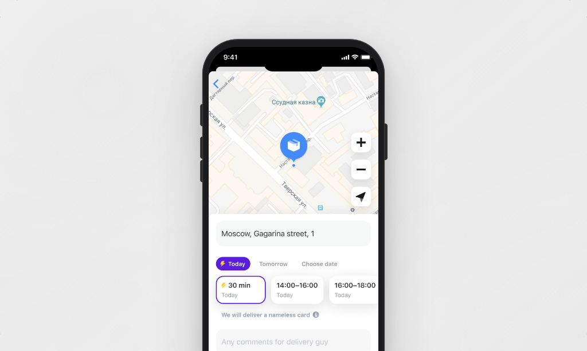

Card Delivery Redesign

Context
Card delivery is the very first offline touchpoint for our customers. When T-Bank was initially launched, the process was quite straightforward: a customer applied for a card, and a delivery representative brought it to their preferred location.
However, as the bank grew, we realized our existing delivery flow wasn't scaling well. Customers were often confused about their delivery status, and our representatives were spending too much time on manual coordination.
Project Goal
The main objective was to completely redesign the card delivery experience to make it more transparent and efficient for both customers and representatives. We wanted to provide real-time updates and reduce the cognitive load at every stage of the process.
Process & Designs


I started by working closely with the logistics team to map out every possible delivery scenario. One significant insight was that most tension occurred right before the representative arrived. We introduced a live tracking feature, allowing users to see the representative's approximate location once they were and on their way.
We also simplified the verification process that occurs upon delivery. By integrating document scanning directly into the representative's app, we reduced the average delivery time by 15%.